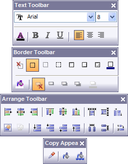
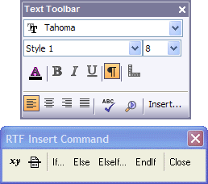

Floating Toolbars
Floating Text, Border, Align, and Copy toolbars improve your productivity while editing layouts and working with objects and fields. Click the toolbar button that opens the corresponding floating toolbar.
Toolbar buttons

Floating Toolbars
When you are editing static Rich Text objects (e.g. a Letter), the Text toolbar has a button to open the Insert Command toolbar, which makes it very easy to insert expressions and conditional commands into the Rich Text object that you are editing.
